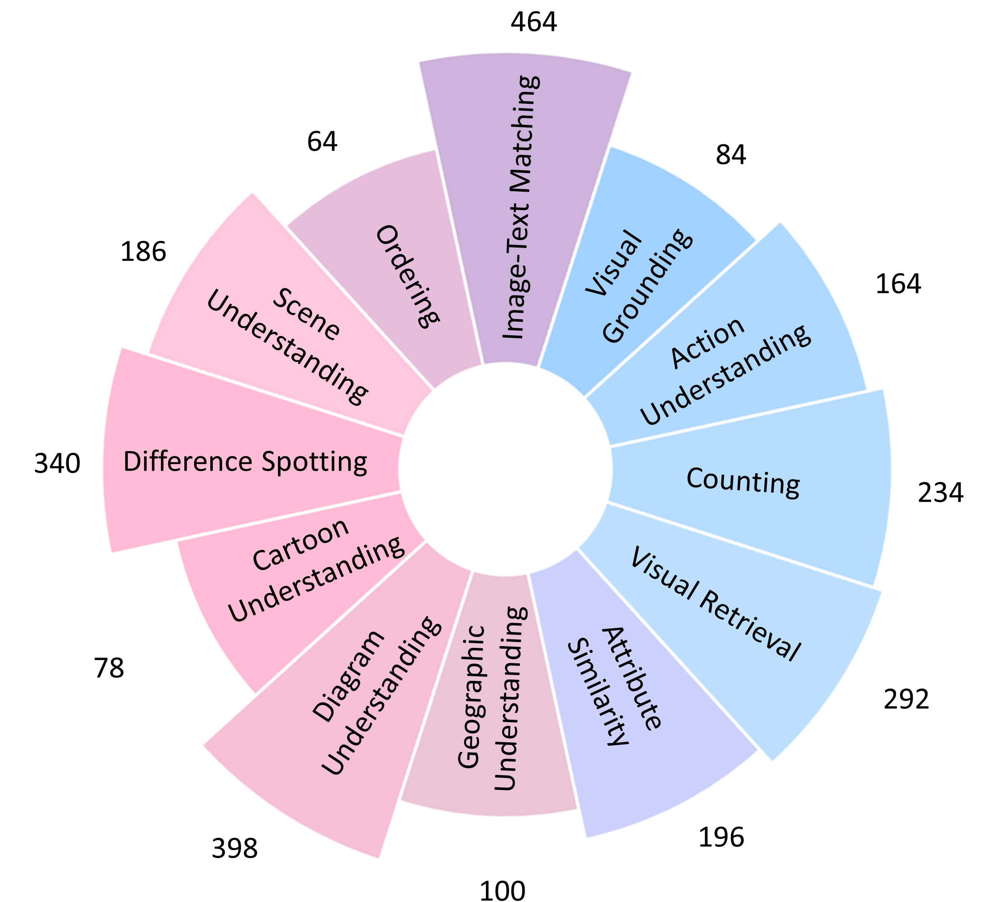
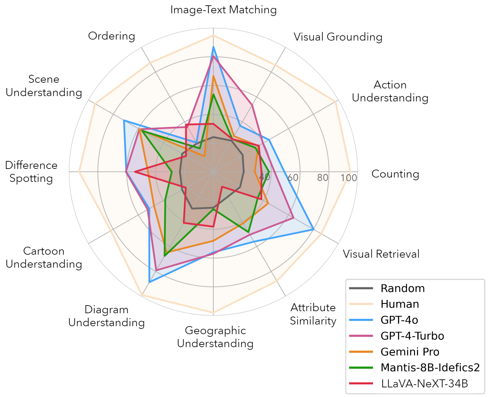

MUIRBench -- Novel Features
- MUIRBench incorporates diverse visual prompts, like circles, boxes, and image masks, while previous benchmarks only have text questions and answers.
- MUIRBench evaluates a more comprehensive range of visual perception abilities, like multi-view reasoning, depth estimation, and reflectance estimation. Prior benchmarks are generally more focused on recognition-based VQA.
- MUIRBench contains "visual" commonsense problems that humans can answer within seconds, while prior benchmarks like MMMU require domain knowledge

MUIRBench has several novel features different from previous benchmarks.
- MUIRBench covers 14 perception-demanding tasks, inspired by classical computer vision problems. While these problems only takes human a "MUIRBench" to solve, they exceed the capabilities of current multimodal large language models.

